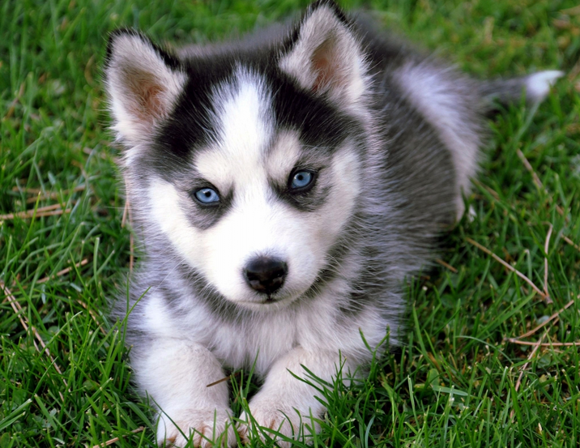
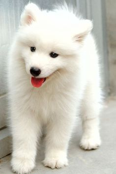

Husky

Husky is a beautiful dog breed with a thick coat that comes in a multitude of colors and markings. Their blue or multi-colored eyes and strikig facial masks only add to the appeal of this breed, which originated in Siberia.
- A little Hard to Train
- Playful
- Very Affectionate
- Good Energy Level
- Good Trainability
German Shepherd

German Shepher is intelligent and capable working dog. His devotion and courage are unmatched. And he's amazingly versatile, excelling at most anything he's trained to do; guide and assistance work for the handicapped, police and military service, herding, search and rescue, drug detection, competitive obedience and faithful companion.
- Good Assistant Dog
- Excellent Sensitivity Level
- Very Affectionate
- Easy to Train
- Very Intelligent
Saint Bernerd

Saint Bernard breed was used to guard the grounds of Switzerland's Hospice Saint Bernard as well as to help find and save lost and injured travelers. He is versatile and excels in the show ring and in obedience trials, drafting, and weight pulling competitions.
- Tolerates Cold Weather Very Well
- Affectionate
- Very Big
- Pretty Easy to Train
- Pretty Friendly
Golden Retriever

Golden Retriever's friendly and tolerant attitude makes him a fabulous family pet, and his intelligence makes him a highly capable working dog. They excel at retrieving game for hunters, tracking, sniffing out drugs, and as therapy and assistance dogs. They are also natural athelets, and do well in dog sports such as agility and competitive obedience.
- Very Friendly
- Very Affectionate
- Very Atheletic
- Easy to Train
- Very Playful
Samoyed

Samoyed are originally bred to hunt, haul sledges, and herd reindeer. Samoyed can be strong-willed at times, but above all they remain friendly, gentle, and devoted family dogs.
- Very Adaptable
- Sensitive
- Very Friendly
- Pretty Easy to Train
- Very Athletic